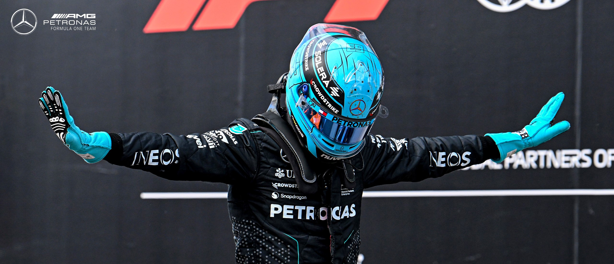
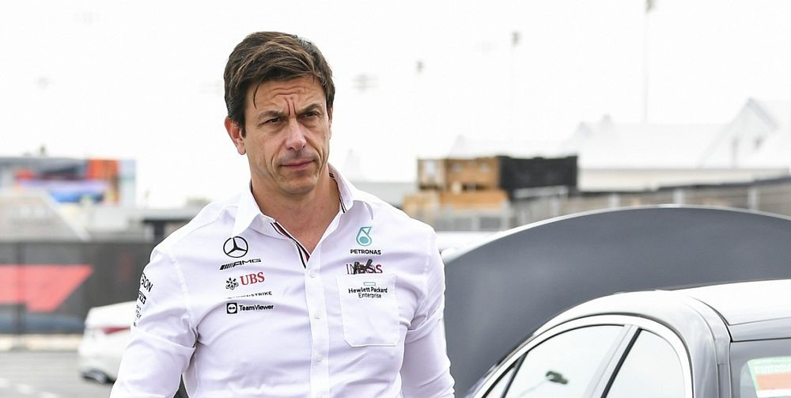

Mercedes F1 Team History

Mercedes-Benz, a German luxury automotive brand of the Mercedes-Benz Group, has been involved in Formula One as both team owner and engine manufacturer for various periods since 1954. The current Mercedes-AMG Petronas F1 Team is based in Brackley, England, and possesses a German licence. An announcement was made in December 2020 that Ineos planned to take a one third equal ownership stake alongside the Mercedes-Benz Group and Toto Wolff this came into effect on 25 January 2022. Mercedes-branded teams are often referred to by the nickname, the "Silver Arrows"
The roots of the brand trace back to the 1901 Mercedes by Daimler-Motoren-Gesellschaft and the 1886 Benz Patent-Motorwagen by Carl Benz, which is widely recognized as the first automobile powered by an internal combustion engine. The brand’s slogan is "The Best or Nothing".
Mercedes F1 Official Driver

Just like any other team, Mercedes-AMG Petronas F1 Team have 2 Driver that compete in F1 Championship
Lewis Hamilton

7 Times World Champion, 105 Race Wins, 201 Podium, 350 Raced. Basiclly THE GOAT.
George Russel

He’s the driver with the motto: “If in doubt, go flat out”.
George Russell has lived by it throughout his F1 career to date, out-qualifying seasoned team mate Robert Kubica at all 21 Grands Prix in his rookie season, putting Williams back on the podium in 2021, and landing his first race win with Mercedes in 2022.
That brilliant baseline speed served Russell well as he totted up titles on his way to Formula 1. The Briton stormed to the 2017 GP3 championship and delivered the 2018 Formula 2 crown under immense pressure.
Spotting his potential, world champions Mercedes swooped to sign him to their junior programme in 2017, when Russell already had a DTM deal on the table. He banked more experience with practice sessions with Force India and tests for the Silver Arrows, before landing his Mercedes-powered Williams race drive.
Mercedes F1 Team Principal : Toto Wolff

Torger Christian "Toto" Wolff, born 12 January 1972 is an Austrian motorsport executive, investor and former racing driver. He holds a 33% stake in the Mercedes-AMG Petronas F1 Team and is Team Principal and CEO of the team.
Mercedes F1 Championship

Winning seven consecutive double Drivers' and Constructors' World Championships from 2014 to 2020 and securing a record-breaking eighth consecutive Constructors' Championship success in 2021, the Team is one of the most successful in the sport's history.